My parents' house has a electronic dog door made by High Tech Pet. The door relys on a radio collar to open and close. The collar is a bit unreliable, and the door is not very responsive. I wanted to add wifi control to the door so that my parents could open and close it from their phone if needed. Or maybe it would just be a cool party trick
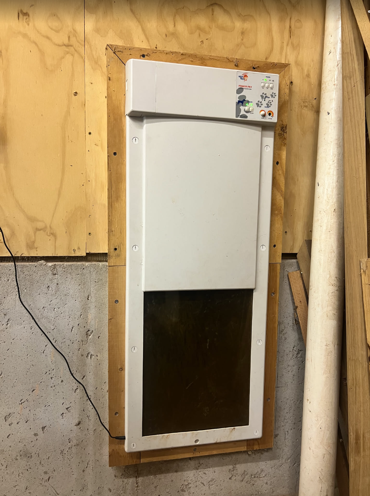The actual reason that we had this thing off the wall is because the motor (that raises and lowers the door) appeared to be broken. I dissasembled the gearbox and found that one of the press-fit gears on the motor shaft was slipping. This meant that the motor wouldn't have enough torque to raise or lower the gate. There was nothing wrong with the motor itself. I epoxied the gear back onto the shaft after prepping the surface (yikes).
After getting inside, it was evident that the design was relatively simple. Motor driver circuitry + MCU on a Large.jpeg pcba and the motorized door. In the below photo, I had the motor removed because the epoxy was curing.
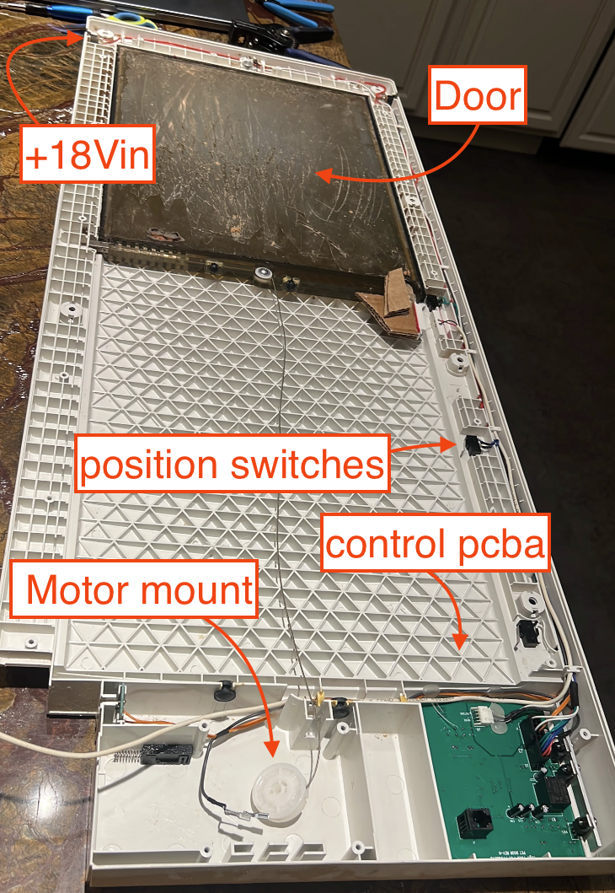Of course this project was subjected to the normal flavor of scope creep. When my dad saw the dog door opened up on the kitchen counter, he realized it would be a great time to add a reed switch alarm contact. This would be an excellent way to detect if anyone is trying to enter through the dog door. I found a spot where the magnet and reed switch could be attatched to the door and mocked up a bracket with the nearest cardboard box.
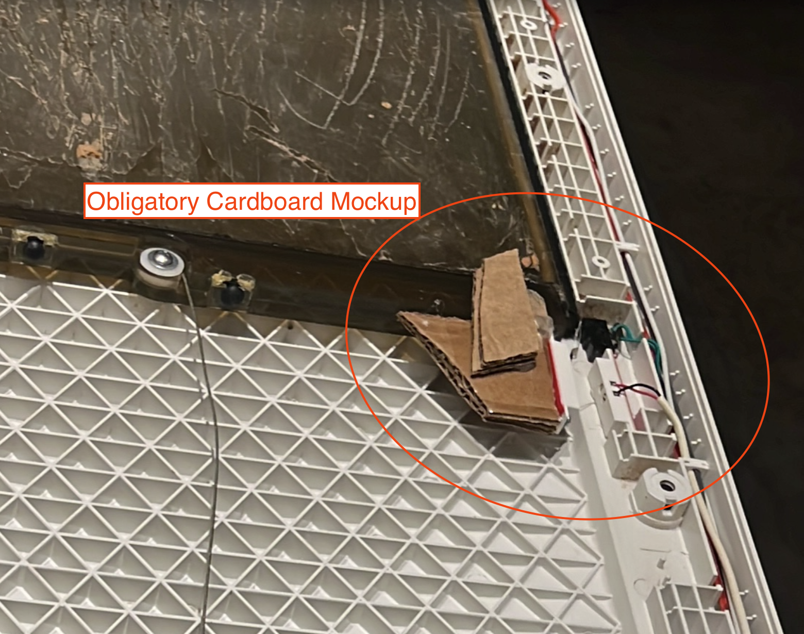Sure. Booted up Freecad and designed a simple bracket to print.
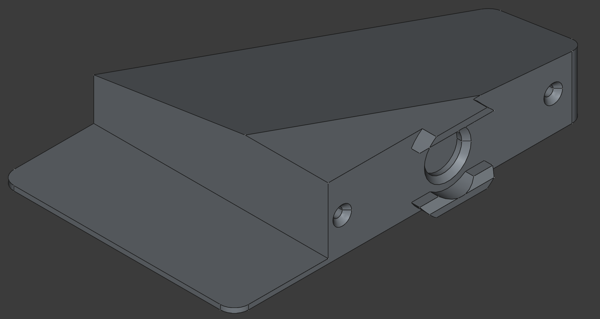The mounting bracket was relatively simple. Just a couple holes for the threadforming fasteners to hold the magnetic contact in. I also added a circular mounting pad for a stronger neodynium magnet. This would allow me to replace the magnet supplied with the contact if the distance between the reed switch and the magnet were too far after final assembly.
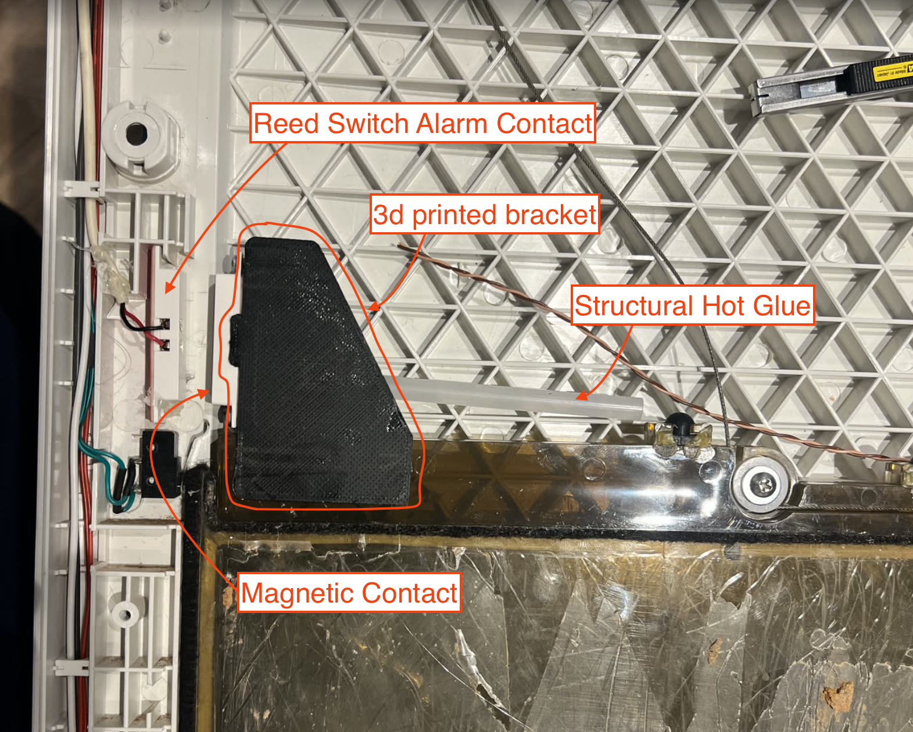Naturally, the fastening adhesive of choice for me is hot glue. I like that I can easily put a drop of IPA on it to release it when needed. I routed the wires and verified that the switch was working by testing continuity when the door was opened/closed. Worked like a charm.
Now for the real fun. I started poking around High Tech Pet's "REV-H" control board to find what I need. The design of their board is relatively simple: 2-layer pcb, Microchip mcu, some buttons (on, off, open) and some custom power electronics for the motor drive circuitry. Because I was home on vacation, I only had two mcus with me (is this normal?).
Not a very large selection, but very capable hardware for this applciation. This tiny board can be powered by USB so I started poking around for ground and +5v on this board. High Tech Pet's silk screen was not very helpful and didn't have any convenient test points.
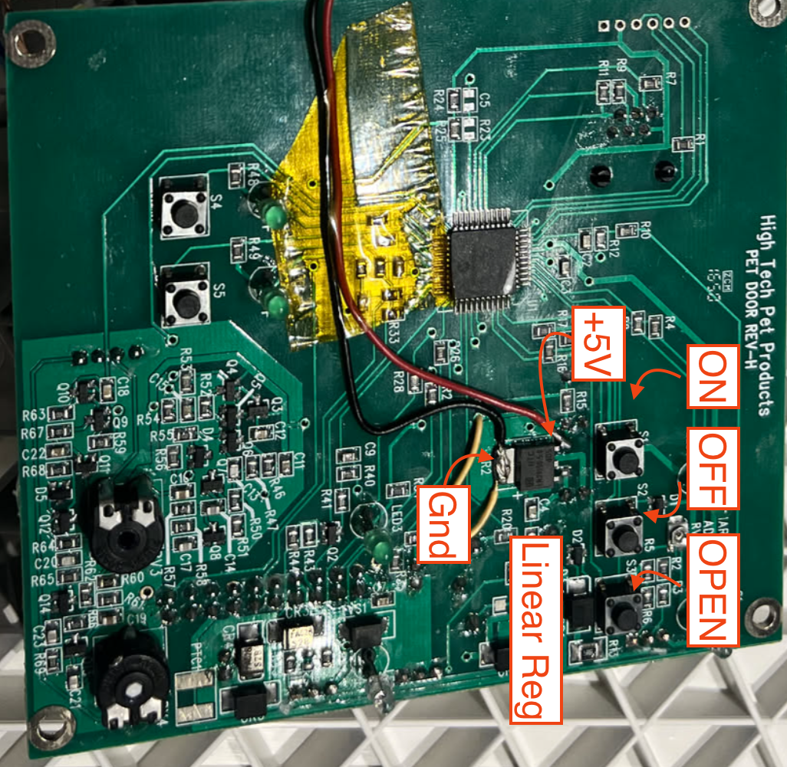I found that they were using a 5v linear regulator to power the Microchip MCU. I tested this and found that the regulator is not powered when the off button is pressed. That's OK. It just means that our esp32 won't get power if someone turns the door off. I busted out the Pinecil and soldered some extra alarm contact wire to get my voltage supply. High Tech Pet was generous with their VIA diameter. This allowed me to sneak some wire through them.
With power out of the way, the next issue was control. I decided that I wanted to replicate the "Open" button press with my esp32. I used the multimeter to determine what this button does when pressed. With the door open, pin 1 of the button sits at +5V. When the button is pressed, pin 1 is pulled to ground. I started getting a bit nervous at this point. The esp32 logic level is +3v3 (not 5v). I hadn't remembered to pack my transistors with me on this trip!
I found a PN2222A clone in an arduino kit that my younger brother had.This saved the day.
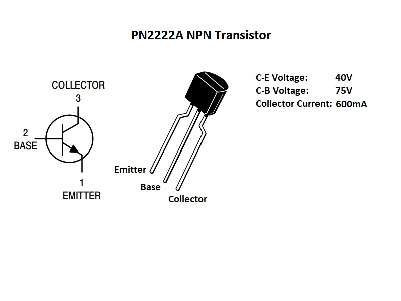PN2222A is a NPN transistor. I used it to pull the button pin to ground when the GPIO pin on the ESP32 is pulled high. This works because the button is connected to +5v and the other side of the button is connected to ground. When the GPIO pin is pulled high, it turns on the transistor and pulls the button pin to ground. This simulates a button press.
I got the breadboard out and powered up the esp32. I connected PN2222A to GPIO0 and 2x LEDs to give a 1hz heartbeat blink and a "wifi-connected" status blink. I probably wouldn't have normally added these LEDs but I figured I would need to troubleshoot this hack remotely through my parents in the future. I consider that a CYA.
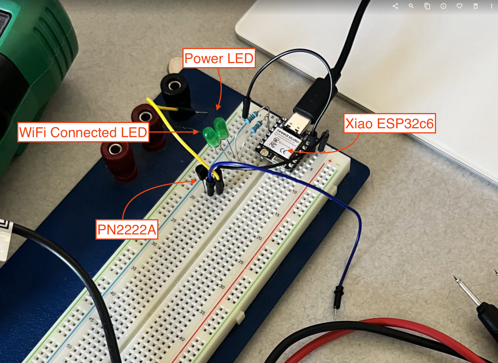I could pretend like I drew the schematic before building on the breadboard but we all know that didn't happen. Here's the schematic for clarity though.
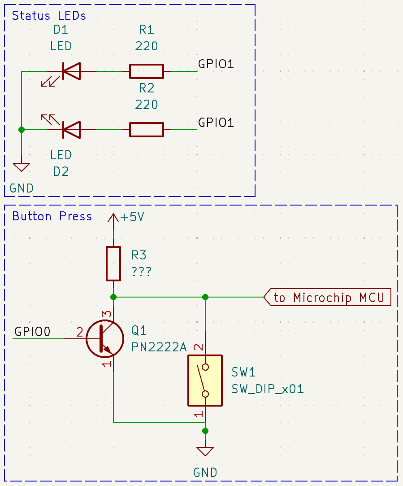I used ESPHome web flashing tool to provision the esp32 initially and begin testing on the breadboard. Chatgpt has gotten pretty good at rapidly spinning up esphome configurations. Of course I sooned realized that the c6 series espressif module is not supported by ESPhome yet. This guy had a nice resource that showed how to compile for the c6 mcu using espidf. I followed this general setup and it worked without issues.
Setup the ESPHome boilerplate:
esphome:
name: dog-door
friendly_name: Dog Door
project:
name: esphome.web
version: dev
platformio_options:
platform: https://github.com/mnowak32/platform-espressif32.git#boards/seeed_xiao_esp32c6
esp32:
board: seeed_xiao_esp32c6
flash_size: 4MB
variant: esp32c6
framework:
type: esp-idf
version: 5.2.1
platform_version: 6.1.17
sdkconfig_options:
CONFIG_ESPTOOLPY_FLASHSIZE_4MB: y
# Enable logging
logger:
# Enable Home Assistant API
api:
ota:
- platform: esphome
wifi:
ssid: !secret wifi_ssid
password: !secret wifi_password
# Enable fallback hotspot (captive portal) in case wifi connection fails
ap:
ssid: "Dog-Door Fallback Hotspot"
captive_portal:
dashboard_import:
package_import_url: github://esphome/firmware/esphome-web/esp32c3.yaml@main
import_full_config: true
web_server:
I set up the output pins for the LED and bjt. I also set up the simulated button press to hold for 0.5s just in case the dog door's firmware had any debouncing time:
# Define the GPIO as an output
output:
- platform: gpio
pin: GPIO0
id: gpio_out
- platform: gpio
pin: GPIO15 # Change to your LED pin
id: led_out
- platform: gpio
pin: GPIO1
id: net_led
- platform: gpio
pin: GPIO2
id: power_led
# Create a switch to control the GPIO
button:
- platform: output
name: "Open Door"
output: gpio_out
duration: 0.5s
Finally, I added the blinking LED's for power on heartbeat and wifi connected:
# Blink the LED at 1Hz
interval:
- interval: 500ms
then:
- output.turn_on: led_out
- delay: 100ms
- output.turn_off: led_out
- interval: 500ms
then:
- output.turn_on: power_led
- delay: 100ms
- output.turn_off: power_led
- interval: 250ms
then:
- if:
condition:
wifi.connected:
then:
- output.turn_on: net_led
- delay: 100ms
- output.turn_off: net_led
I compiled this and flashed onto the esp32 after adding the wifi secrets. Looks good. It was time to do more soldering in my parent's kitchen.
I hot glued the esp32 c6 onto a bare spot on the control board. We didn't have any fine gauge wire at home so I removed the jacket from some scrap ethernet cable and untwisted the pairs. The solid-core wire inside CAT6 cable works really well for this application.
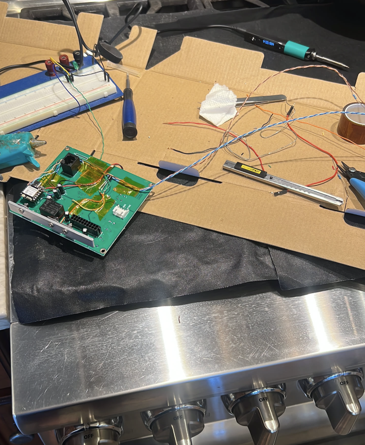I left long pig-tails on the LED's so I could route them out the side of the enclosure.
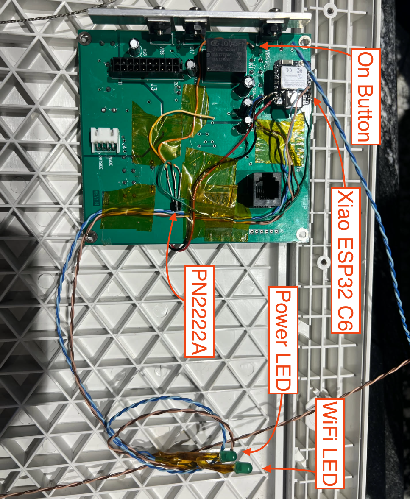Before reinstalling everything, I tested that I could open the door by executing commands against the ESPhome API for this switch and everything appeared to be working properly. At this point I wanted to Demo the gui control to anyone who would listen.
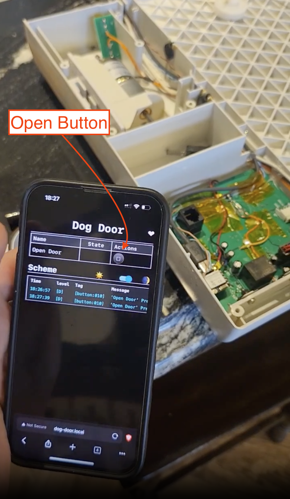I started putting the door back together. I tidied up the new wire routing. I did end up using as much hot glue as the original manufacturer. Once the rear cover was back on, I made a beautiful cardboard fascia for the LED indicators:
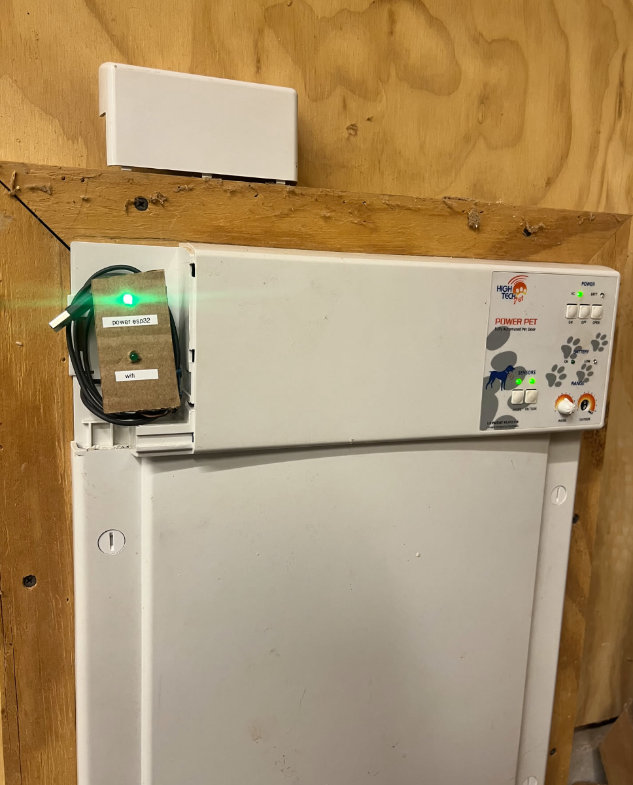And of course added a clean button in Home Assistant:

After installing the door, I realized we didn't even have wifi coverage where the door is.